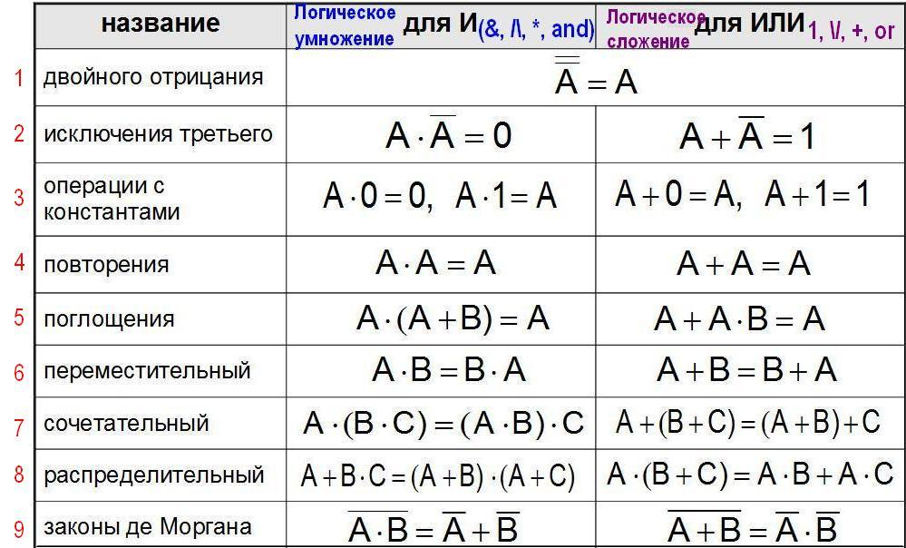
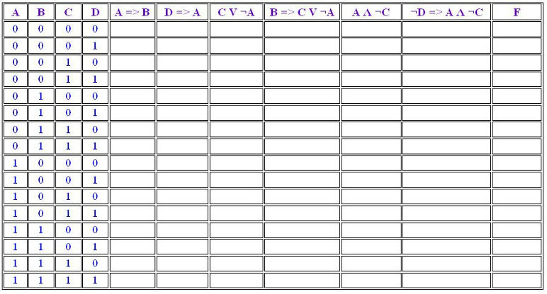

Основные законы Алгебры логики. Решение задач
Цели
- Рассмотреть основные логические законы
- Научиться решеть задачи с использванием логических законов
Инструменты:
- ОС Windows
- Браузер
-
Задание 1. Оформите таблицу “Законы алгебры логики” в тетради
Коммутативность конъюнкции и коммутативность дизъюнкции
Коммутативность – это перестановочность:
Знакомые с 1-го класса правила: «От перестановки множителей (слагаемых) произведение (сумма) не меняется». Но при всей кажущейся элементарности этого свойства, справедливо оно далеко не всегда, в частности, некоммутативным является умножение матриц (в общем случае их переставлять нельзя), а векторное произведение векторов – антикоммутативно (перестановка векторов влечёт за собой смену знака).
И, кроме того, здесь я снова хочу подчеркнуть формализм математической логики. Так, например, фразы «Студент сдал экзамен и выпил» и «Студент выпил и сдал экзамен» различны с содержательной точки зрения, но неразличимы с позиций формальной истинности. …Таких студентов знает каждый из нас, и из этических соображений мы не будет озвучивать конкретных имён =)
Ассоциативность логического умножения и сложения
Или, если «по-школьному» – сочетательное свойство:
Обратите внимание, что во 2-м случае будет некорректно говорить о «раскрытии скобок», в известном смысле здесь «фикция» – ведь их можно убрать вообще:  , т.к. умножение – это более сильная операция.
, т.к. умножение – это более сильная операция.
И опять же – эти, казалось бы, «банальные» свойства выполняются далеко не во всех алгебраических системах, и, более того, требуют доказательства (о которых мы очень скоро поговорим). К слову, второй дистрибутивный закон несправедлив даже в нашей «обычной» алгебре. И в самом деле: 
Закон идемпотентности
Прямо какой-то принцип здоровой психики: «я и я – это я», «я или я – это тоже я» =)
Закон двойного отрицания
Ну а здесь уже напрашивается пример с русским языком – все прекрасно знают, что две частицы «не» означают «да». А для того, чтобы усилить эмоциональную окраску отрицания нередко используют три «не»:
Законы поглощения
– «а был ли мальчик?» =)
В правом тождестве скобки можно опустить.
Законы де Моргана
<
Предположим, что строгий Преподаватель (имя которого вам тоже известно:)) ставит экзамен, если  – Студент ответил на 1-й вопрос и
– Студент ответил на 1-й вопрос и  – Студент ответил на 2-й вопрос. Тогда высказывание
– Студент ответил на 2-й вопрос. Тогда высказывание  , гласящее о том, что Студент не сдал экзамен, будет равносильно утверждению
, гласящее о том, что Студент не сдал экзамен, будет равносильно утверждению  – Студент не ответил на 1-й вопрос или на 2-й вопрос.
– Студент не ответил на 1-й вопрос или на 2-й вопрос.
Как уже отмечалось выше, равносильности подлежат доказательству, которое стандартно осуществляется с помощью таблиц истинности. В действительности мы уже доказали равносильности, выражающие импликацию и эквиваленцию, и сейчас настало время закрепить технику решения данной задачи.
Докажем тождество  . Поскольку в него входит единственное высказывание
. Поскольку в него входит единственное высказывание  , то «на входе» возможно всего лишь два варианта: единица либо ноль. Далее приписываем единичный столбец и применяем к ним правило И:
, то «на входе» возможно всего лишь два варианта: единица либо ноль. Далее приписываем единичный столбец и применяем к ним правило И:

В результате «на выходе» получена формула, истинность которой совпадает с истинностью высказывания  . Равносильность
. Равносильность  доказана.
доказана.
Да, это доказательство является примитивным (а кто-то скажет, что и «тупым»), но типичный Преподаватель по матлогике вытрясет за него душу. Поэтому даже к таким простым вещам не стОит относиться пренебрежительно.
Теперь убедимся, например, в справедливости закона де Моргана  .
.
Сначала составим таблицу истинности для левой части. Поскольку дизъюнкция находится в скобках, то в первую очередь выполняем именно её, после чего отрицаем столбец  :
:

Далее составим таблицу истинности для правой части  . Здесь тоже всё прозрачно – в первую очередь проводим более «сильные» отрицания, затем применяем к столбцам
. Здесь тоже всё прозрачно – в первую очередь проводим более «сильные» отрицания, затем применяем к столбцам  правило И:
правило И:

Результаты совпали, таким образом, тождество  доказано.
доказано.
Любую равносильность  можно представить в виде тождественно истинной формулы
можно представить в виде тождественно истинной формулы  . Это значит, что ПРИ ЛЮБОМ исходном наборе нулей и единиц «на выходе» получается строго единица. И этому есть очень простое объяснение: так как таблицы истинности
. Это значит, что ПРИ ЛЮБОМ исходном наборе нулей и единиц «на выходе» получается строго единица. И этому есть очень простое объяснение: так как таблицы истинности  и
и  совпадают, то, разумеется, они эквивалентны. Соединим, например, эквиваленцией левую и правую часть только что доказанного тождества де Моргана:
совпадают, то, разумеется, они эквивалентны. Соединим, например, эквиваленцией левую и правую часть только что доказанного тождества де Моргана:

Или, если компактнее: 
Задание 2
Доказать следующие равносильности:
а)  ;
;
б) 
Краткое решение в конце урока. Не ленимся! Постарайтесь не просто составить таблицы истинности, но ещё и чётко сформулировать выводы. Как я недавно отмечал, пренебрежение простыми вещами может обойтись очень и очень дорого!
Продолжаем знакомиться с законами логики!
Да, совершенно верно – мы с ними уже вовсю работаем:
Формула, которая принимает значение Истина при любом наборе значений входящих в неё переменных, называется тождественно истинной формулой или законом логики.
В силу обоснованного ранее перехода от равносильности  к тождественно истинной формуле
к тождественно истинной формуле  , все перечисленные выше тождества представляют собой законы логики.
, все перечисленные выше тождества представляют собой законы логики.
Формула, которая принимает значение Ложь при любом наборе значений входящих в неё переменных, называется тождественно ложной формулой или противоречием.
Фирменный пример противоречия от древних греков:
 – никакое высказывание не может быть истинным и ложным одновременно.
– никакое высказывание не может быть истинным и ложным одновременно.
Доказательство тривиально:

«На выходе» получены исключительно нули, следовательно, формула действительно тождественна ложна.
Однако и любое противоречие – это тоже закон логики, в частности: 
Нельзя объять столь обширную тему в одной-единственной статье, и поэтому я ограничусь ещё лишь несколькими законами:
Закон исключённого третьего
 – в классической логике любое высказывание истинно или ложно и третьего не дано. «Быть или не быть» – вот в чём вопрос.
– в классической логике любое высказывание истинно или ложно и третьего не дано. «Быть или не быть» – вот в чём вопрос.
Самостоятельно составьте табличку истинности и убедитесь в том, что это тождественно истинная формула.
Закон контрапозиции

Этот закон активно муссировался, когда мы обсуждали суть необходимого условия, вспоминаем: «Если во время дождя на улице сыро, то из этого следует, что если на улице сухо, то дождя точно не было».
Также из данного закона следует, что если справедливой является прямая теорема  , то обязательно истинным будет и утверждение
, то обязательно истинным будет и утверждение  , которое иногда называют противоположной теоремой.
, которое иногда называют противоположной теоремой.
Если истинна обратная теорема  , то в силу закона контрапозиции
, то в силу закона контрапозиции  , справедлива и теорема, противоположная обратной:
, справедлива и теорема, противоположная обратной: 
И снова вернёмся к нашим содержательным примерам: для высказываний  – число делится на 4,
– число делится на 4,  – число делится на 2 справедливы прямая и противоположная теоремы, но ложны обратная и противоположная обратной теоремы. Для «взрослой» же формулировки теоремы Пифагора истинны все 4 «направления».
– число делится на 2 справедливы прямая и противоположная теоремы, но ложны обратная и противоположная обратной теоремы. Для «взрослой» же формулировки теоремы Пифагора истинны все 4 «направления».
Закон силлогизма

Тоже классика жанра: «Все дубы – деревья, все деревья – растения, следовательно, все дубы – растения».
Ну и здесь опять хочется отметить формализм математической логики: если наш строгий Преподаватель думает, что некий Студент – есть дуб, то с формальной точки зрения данный Студент, безусловно, растение =) …хотя, если задуматься, то может быть и с неформальной тоже =)
Давайте на этой веселой ноте проведём доказательство. В данную формулу входят уже  элементарных высказывания
элементарных высказывания  , а значит, всего будет:
, а значит, всего будет:  различных комбинаций нулей и единиц (см. три левых столбца таблицы). Заодно, кстати, записал вам общую формулу; с точки зрения комбинаторики, здесь размещения с повторениями.
различных комбинаций нулей и единиц (см. три левых столбца таблицы). Заодно, кстати, записал вам общую формулу; с точки зрения комбинаторики, здесь размещения с повторениями.
Составим таблицу истинности для формулы  . В соответствии с приоритетом логических операций, придерживаемся следующего алгоритма:
. В соответствии с приоритетом логических операций, придерживаемся следующего алгоритма:
1) выполняем импликации  и
и  . Вообще говоря, можно сразу выполнить и 3-ю импликацию, но с ней удобнее (и допустимо!) разобраться чуть позже;
. Вообще говоря, можно сразу выполнить и 3-ю импликацию, но с ней удобнее (и допустимо!) разобраться чуть позже;
2) к столбцам  применяем правило И;
применяем правило И;
3) вот теперь выполняем  ;
;
4) и на завершающем шаге применяем импликацию к столбцам  и
и  .
.
Не стесняйтесь контролировать процесс указательным и средним пальцем :))

Из последнего столбца, думаю, всё понятно без комментариев:
 , что и требовалось доказать.
, что и требовалось доказать.
Задание 3
Выяснить, будет ли являться законом логики следующая формула:

Краткое решение в конце урока. Да, и чуть не забыл – давайте условимся перечислять исходные наборы нулей и единиц в точно таком же порядке, что и при доказательстве закона силлогизма. Строки конечно, можно и переставить, но это сильно затруднит сверку с моим решением.
Преобразование логических формул
Помимо своего «логического» назначения, равносильности широко используются для преобразования и упрощения формул. Грубо говоря, одну часть тождества можно менять на другую. Так, например, если в логической формуле вам встретился фрагмент  , то по закону идемпотентности вместо него можно (и нужно) записать просто
, то по закону идемпотентности вместо него можно (и нужно) записать просто  . Если вы видите
. Если вы видите  , то по закону поглощения упрощайте запись до
, то по закону поглощения упрощайте запись до  . И так далее.
. И так далее.
Кроме того, есть ещё одна важная вещь: тождества справедливы не только для элементарных высказываний, но и для произвольных формул. Так, например:


 , где
, где  – любые (сколь угодно сложные) формулы.
– любые (сколь угодно сложные) формулы.
Преобразуем, например, сложную импликацию  (1-е тождество):
(1-е тождество):

Далее применим к скобке «сложный» закон де Моргана, при этом, в силу приоритета операций, именно закон  , где
, где  :
:

Скобки можно убрать, т.к. внутри находится более «сильная» конъюнкция:

Далее напрашивается использовать «простой» закон де Моргана и т.д.
Ну, а с коммутативностью вообще всё просто – даже обозначать ничего не нужно… что-то запал мне в душу закон силлогизма:))

Таким образом, закон можно переписать и в более затейливом виде:

Проговорите вслух логическую цепочку «с дубом, деревом, растением», и вы поймёте, что от перестановки импликаций содержательный смысл закона нисколько не изменился. Разве что формулировка стала оригинальнее.
В качестве тренировки упросим формулу  .
.
С чего начать? Прежде всего, разобраться с порядком действий: здесь отрицание применено к целой скобке, которая «скреплена» с высказыванием  «чуть более слабой» конъюнкцией. По существу, перед нами логическое произведение двух множителей:
«чуть более слабой» конъюнкцией. По существу, перед нами логическое произведение двух множителей:  . Из двух оставшихся операций низшим приоритетом обладает импликация, и поэтому вся формула имеет следующую структуру:
. Из двух оставшихся операций низшим приоритетом обладает импликация, и поэтому вся формула имеет следующую структуру:  .
.
Как правило, на первом шаге (шагах) избавляются от эквиваленции и импликации (если они есть) и сводят формулу к трём основным логическим операциям. Что тут скажешь…. Логично.
(1) Используем тождество  . А нашем случае
. А нашем случае  .
.
Затем обычно следуют «разборки» со скобками. Сначала всё решение, затем комментарии. Чтобы не получилось «масло масляное», буду использовать значки «обычного» равенства:

(2) К внешним скобкам применяем закон де Моргана  , где
, где  .
.
(3) К внутренним скобкам применяем закон двойного отрицания  . Внешние скобки можно убрать, т.к. за её пределами находятся равные по силе операции.
. Внешние скобки можно убрать, т.к. за её пределами находятся равные по силе операции.
(4) В силу коммутативности дизъюнкции меняем местами  и
и  . Оставшиеся скобки тоже убираем по озвученной выше причине.
. Оставшиеся скобки тоже убираем по озвученной выше причине.
(5) В силу коммутативности дизъюнкции меняем местами  и
и  , а также
, а также  и
и  .
.
(6) Используем закон идемпотентности  и закон исключенного третьего
и закон исключенного третьего 
(7) Дважды используем тождество 
Вот оно как…, оказалось, что наша формула – тожественно истинна:

Желающие могут составить таблицу истинности и убедиться в справедливости данного факта.
Наверное, все обратили внимание на формализм последних преобразований, но решать лучше именно так! В противном случае с немалой вероятностью гарантированы проблемы с зачётом задания (впрочем, тут от преподавателя зависит). Математическая логика как наука – формальна, и строго говоря, осуществлять «перескоки» наподобие  нежелательно.
нежелательно.
Пара задач для закрепления материала:
Задание 4
Выразить эквиваленцию  через отрицание, конъюнкцию, дизъюнкцию и раскрыть скобки
через отрицание, конъюнкцию, дизъюнкцию и раскрыть скобки
Аккуратно проводим преобразования в соответствии с равносильностями. После этого будет не лишним вернуться к параграфу об эквиваленции и найти там фразу, которая соответствует полученному результату ;-)
Задание 5
Упростить логическую формулу

Решения с подробными комментариями совсем близко.
И в заключение урока небольшое напутствие для читателей, которым предстоит погружение в матлогику. Данный предмет у меня был на 1-м курсе института, и в ходе изучения исчисления высказываний, предикатов и прочих «машин тьюринга» я допускал принципиальную ошибку – а именно, пытался «подогнать» под математическую логику неформальную основу. И окончательное понимание всей стройности формальной теории, важности «очевидных» доказательств и т.д. пришло далеко не сразу. Скучно? Нет! – на самом деле очень красиво…. То же самое, кстати, относится к высшей алгебре и некоторым другим предметам.
…но что бы вы прочитали эти строки, я всё-таки преподнёс материал, скорее в «школьном» стиле – с многочисленными содержательными примерами!
Желаю успехов!
Решения и ответы:
Задание 1 Решение: составим таблицу истинности для формулы  :
:

(подробные инструкции по заполнению таблицы находятся после условия задачи)
Полученный результат совпадает с эквиваленцией высказываний  и
и  , таким образом:
, таким образом:

Задание 2 Решение: доказательства проведём с помощью таблиц истинности:
а) Дважды записываем все варианты истины и лжи высказывания  и применяем к столбцам операцию ИЛИ:
и применяем к столбцам операцию ИЛИ:

Результат  совпадает с
совпадает с  . Тождество
. Тождество  доказано
доказано
б) составим таблицу истинности для левой части тождества
 . Сначала к столбцам
. Сначала к столбцам  и
и  применяем операцию ИЛИ, затем к столбцам
применяем операцию ИЛИ, затем к столбцам  и
и  – операцию И:
– операцию И:

В результате истинность формулы  совпала с истинностью высказывания
совпала с истинностью высказывания  , таким образом, тождество
, таким образом, тождество  доказано.
доказано.
Задание 3 Решение: составим таблицу истинности:

Вывод: данная формула не является тождественно истинной (законом логики)
Задание 4 Решение:

(1) Используем тождество  .
.
(2) Дважды применяем тождество  .
.
(3) Используем дистрибутивный закон  , в данном случае:
, в данном случае:
 (квадратные скобки можно было не ставить – они не меняют порядок действий, но помогают лучше видеть ситуацию).
(квадратные скобки можно было не ставить – они не меняют порядок действий, но помогают лучше видеть ситуацию).
(4) В квадратных скобках используем коммутативность конъюнкции.
(5) Дважды используем тот же самый дистрибутивный закон.
(6) Во второй слева скобке используем коммутативность конъюнкции.
(7) Согласно закону противоречия:  .
.
(8) К формуле  дважды применяем тожество
дважды применяем тожество  .
.
(9) А это уже для красоты :)) Скобки, кстати, можно было убрать намного раньше (я их не опускал с целью улучшить восприятие преобразований).
Примечание: на 3-м шаге можно было раскрыть скобки по «правилу умножения многочленов» и сразу перейти к шагу № 7, но, строго говоря, это действие ещё нужно обосновать. А вдруг в алгебре логики это правило несправедливо?
Задание 5 Решение:

(1) Для левой скобки используем закон де Моргана. Во второй скобке – «раскладываем» импликацию.
(2) В первой скобке дважды применяем закон двойного отрицания. В силу коммутативности конъюнкции меняем местам  и
и  .
.
(3) К «иксу» и правой скобке применяем дистрибутивный закон.
(4) Согласно закону противоречия высказывания, средняя скобка тождественно ложна.
(5) К левой скобке применяем тождество  . Убираем все скобки, поскольку это не меняет порядок действий.
. Убираем все скобки, поскольку это не меняет порядок действий.
(6) Используем коммутативность умножения и закон поглощения  .
.
Ответ: 
Равносильные преобразования логических формул имеют то же назначение, что и преобразования формул в обычной алгебре. Они служат для упрощения формул или приведения их к определённому виду путем использования основных законов алгебры логики.
| Под упрощением формулы, не содержащей операций импликации и эквиваленции, понимают равносильное преобразование, приводящее к формуле, которая либо содержит по сравнению с исходной меньшее число операций конъюнкции и дизъюнкции и не содержит отрицаний неэлементарных формул, либо содержит меньшее число вхождений переменных. |
Некоторые преобразования логических формул похожи на преобразования формул в обычной алгебре (вынесение общего множителя за скобки, использование переместительного и сочетательного законов и т.п.), тогда как другие преобразования основаны на свойствах, которыми не обладают операции обычной алгебры (использование распределительного закона для конъюнкции, законов поглощения, склеивания, де Моргана и др.).
Покажем на примерах некоторые приемы и способы, применяемые при упрощении логических формул:
1) 
(законы алгебры логики применяются в следующей последовательности: правило
де Моргана, сочетательный закон, правило операций переменной с её инверсией
и правило операций с константами);
2) 
(применяется правило де Моргана, выносится за скобки общий множитель,
используется правило операций переменной с её инверсией);
3) 
(повторяется второй сомножитель, что разрешено законом
идемпотенции; затем комбинируются два первых и два последних сомножителя
и используется закон склеивания);
4) 
(вводится вспомогательный логический сомножитель ( ); затем комбинируются два крайних и два
средних логических слагаемых и используется закон поглощения);
); затем комбинируются два крайних и два
средних логических слагаемых и используется закон поглощения);
5) 
(сначала добиваемся, чтобы знак отрицания стоял только перед отдельными
переменными, а не перед их комбинациями, для этого дважды применяем правило
де Моргана; затем используем закон двойного отрицания);
6) 
(выносятся за скобки общие множители; применяется правило операций с
константами);
7) 
(к отрицаниям неэлементарных формул применяется правило де Моргана;
используются законы двойного отрицания и склеивания);
8) 
(общий множитель x выносится за скобки, комбинируются слагаемые в скобках
— первое с третьим и второе с четвертым, к дизъюнкции  применяется правило операции переменной
с её инверсией);
применяется правило операции переменной
с её инверсией);
9) 
(используются распределительный закон для дизъюнкции, правило операции
переменной с ее инверсией, правило операций с константами, переместительный
закон и распределительный закон для конъюнкции);
10) 
(используются правило де Моргана, закон двойного отрицания и закон поглощения).
Из этих примеров видно, что при упрощении логических формул не всегда очевидно, какой из законов алгебры логики следует применить на том или ином шаге. Навыки приходят с опытом.
Задание 3. Внимательно изучите материал.Решение логических задач средствами алгебры логики
Обычно используется следующая схема решения:
- изучается условие задачи;
- вводится система обозначений для логических высказываний;
- конструируется логическая формула, описывающая логические связи между всеми высказываниями условия задачи;
- определяются значения истинности этой логической формулы;
- из полученных значений истинности формулы определяются значения истинности введённых логических высказываний, на основании которых делается заключение о решении.
Пример 1. Трое друзей, болельщиков автогонок "Формула-1", спорили о результатах предстоящего этапа гонок.
— Вот увидишь, Шумахер не придет первым, — сказал Джон. Первым будет Хилл.
— Да нет же, победителем будет, как всегда, Шумахер, — воскликнул Ник. — А об Алези и говорить нечего, ему не быть первым.
Питер, к которому обратился Ник, возмутился:
— Хиллу не видать первого места, а вот Алези пилотирует самую мощную машину.
По завершении этапа гонок оказалось, что каждое из двух предположений двоих друзей подтвердилось, а оба предположения третьего из друзей оказались неверны. Кто выиграл этап гонки?
Решение. Введем обозначения для логических высказываний:
Ш — победит Шумахер; Х — победит Хилл; А — победит Алези.
Реплика Ника "Алези пилотирует самую мощную машину" не содержит никакого утверждения о месте, которое займёт этот гонщик, поэтому в дальнейших рассуждениях не учитывается.
Зафиксируем высказывания каждого из друзей:
Учитывая то, что предположения двух друзей подтвердились, а предположения третьего неверны, запишем и упростим истинное высказывание
Высказывание  истинно только при
Ш=1, А=0, Х=0.
истинно только при
Ш=1, А=0, Х=0.
Ответ. Победителем этапа гонок стал Шумахер.
Пример 2. Некий любитель приключений отправился в кругосветное путешествие на яхте, оснащённой бортовым компьютером. Его предупредили, что чаще всего выходят из строя три узла компьютера — a, b, c, и дали необходимые детали для замены. Выяснить, какой именно узел надо заменить, он может по сигнальным лампочкам на контрольной панели. Лампочек тоже ровно три: x, y и z.
Инструкция по выявлению неисправных узлов такова:
- если неисправен хотя бы один из узлов компьютера, то горит по крайней мере одна из лампочек x, y, z;
- если неисправен узел a, но исправен узел с, то загорается лампочка y;
- если неисправен узел с, но исправен узел b, загорается лампочка y, но не загорается лампочка x;
- если неисправен узел b, но исправен узел c, то загораются лампочки x и y или не загорается лампочка x;
- если горит лампочка х и при этом либо неисправен узел а, либо все три узла a, b, c исправны, то горит и лампочка y.
В пути компьютер сломался. На контрольной панели загорелась лампочка x. Тщательно изучив инструкцию, путешественник починил компьютер. Но с этого момента и до конца плавания его не оставляла тревога. Он понял, что инструкция несовершенна, и есть случаи, когда она ему не поможет.
Какие узлы заменил путешественник? Какие изъяны он обнаружил в инструкции?
Решение. Введем обозначения для логических высказываний:
a — неисправен узел а; x — горит лампочка х;
b — неисправен узел b; y — горит лампочка y;
с — неисправен узел с; z — горит лампочка z.
Правила 1-5 выражаются следующими формулами:

Формулы 1-5 истинны по условию, следовательно, их конъюнкция тоже истинна:
Выражая импликацию через дизъюнкцию и отрицание (напомним, что  ), получаем:
), получаем:

Подставляя в это тождество конкретные значения истинности x=1, y=0, z=0, получаем:
Отсюда следует, что a=0, b=1, c=1.
Ответ на первый вопрос задачи: нужно заменить блоки b и c; блок а не требует замены. Ответ на второй вопрос задачи получите самостоятельно.
Задание 4. Решите задачу с помощью логических операций. Задание по вариантам.
1. Три девочки — Роза, Маргарита и Анюта представили на конкурс
цветоводов корзины выращенных ими роз, маргариток и анютиных глазок. Девочка,
вырастившая маргаритки, обратила внимание Розы на то, что ни у одной из девочек
имя не совпадает с названием любимых цветов.
Какие цветы вырастила каждая из девочек?
2. Виновник ночного дорожно-транспортного происшествия скрылся с
места аварии.
Первый из опрошенных свидетелей сказал работникам ГАИ, что это были "Жигули",
первая цифра номера машины — единица.
Второй свидетель сказал, что машина была марки "Москвич", а номер начинался
с семёрки.
Третий свидетель заявил, что машина была иностранная, номер начинался не с
единицы.
При дальнейшем расследовании выяснилось, что каждый из свидетелей правильно
указал либо только марку машины, либо только первую цифру номера.
Какой марки была машина и с какой цифры начинался номер?
3. Пятеро одноклассников: Ирена, Тимур, Камилла, Эльдар и Залим
стали победителями олимпиад школьников по физике, математике, информатике,
литературе и географии.
Известно, что:
- победитель олимпиады по информатике учит Ирену и Тимура работе на компьютере;
- Камилла и Эльдар тоже заинтересовались информатикой;
- Тимур всегда побаивался физики;
- Камилла, Тимур и победитель олимпиады по литературе занимаются плаванием;
- Тимур и Камилла поздравили победителя олимпиады по математике;
- Ирена cожалеет о том, что у нее остается мало времени на литературу.
4. Ирена любит мороженое с фруктами. В кафе был выбор из таких вариантов:
- пломбир с орехами;
- пломбир с бананами;
- пломбир с черникой;
- шоколадное с черникой;
- шоколадное с клубникой.
Какое же мороженое и с какими фруктами любит Ирена?
5. На очередном этапе автогонок "Формула 1" первые четыре места заняли
Шумахер, Алези, Хилл и Кулхардт. Опоздавший к месту награждения телерепортёр
успел заснять пилотов, занявших второе и третье места, которые поливали друг
друга шампанским. В это время Шумахер с четвёртым гонщиком пожимали друг другу
руки. Далее в кадр попал мокрый Хилл, поздравляющий пилота, занявшего второе
место. Напоследок оператор снял сцену, в которой Шумахер и Кулхардт пытались
втащить на пьедестал почёта пилота, занявшего четвёртое место.
Просматривая отснятый материал, режиссёр спортивного выпуска быстро разобрался,
кто из пилотов какое место занял. Он знал, что, в соответствии с церемонией
награждения победителей гонок, пилоты, занявшие первые три места, поливают друг
друга шампанским из огромных бутылок знаменитой фирмы — спонсора соревнований.
Какое же место занял каждый пилот?
6 В некотором царстве-государстве повадился Змей Горыныч разбойничать.
Послал царь четырёх богатырей погубить Змея, а награду за то обещал великую.
Вернулись богатыри с победой и спрашивает их царь: "Так кто же из вас главный
победитель, кому достанется царёва дочь и полцарства?"
Засмущались добры молодцы и ответы дали туманные:
Сказал Илья Муромец: "Это все Алеша Попович, царь-батюшка".
Алеша Попович возразил: "То был Микула Селянинович".
Микула Селянинович: "Не прав Алеша, не я это".
Добрыня Никитич: "И не я, батюшка".
Подвернулась тут баба Яга и говорит царю: "А прав то лишь один из
богатырей, видела я всю битву своими глазами".
Кто же из богатырей победил Змея Горыныча?
7. При составлении расписания на пятницу были высказаны пожелания,
чтобы информатика была первым или вторым уроком, физика — первым или
третьим, история — вторым или третьим.
Можно ли удовлетворить одновременно все высказанные пожелания?
8 Обсуждая конструкцию нового трёхмоторного самолёта, трое
конструкторов поочередно высказали следующие предположения:
1) при отказе второго двигателя надо приземляться, а при отказе третьего
можно продолжать полёт;
2) при отказе первого двигателя лететь можно, или при отказе третьего
двигателя лететь нельзя;
3) при отказе третьего двигателя лететь можно, но при отказе хотя бы
одного из остальных надо садиться.
Лётные испытания подтвердили правоту каждого из конструкторов. Определите,
при отказе какого из двигателей нельзя продолжать полёт.
9. В соревнованиях по плаванию участвовали Андрей, Виктор, Саша
и Дима. Их друзья высказали предположения о возможных победителях:
1) первым будет Саша, Виктор будет вторым;
2) вторым будет Саша, Дима будет третьим;
3) Андрей будет вторым, Дима будет четвёртым.
По окончании соревнований оказалось, что в каждом из предположений
только одно из высказываний истинно, другое ложно.
Какое место на соревнованиях занял каждый из юношей, если все они
заняли разные места.
10 Для длительной международной экспедиции на околоземной космической
станции надо из восьми претендентов отобрать шесть специалистов: по аэронавтике,
космонавигации, биомеханике, энергетике, медицине и астрофизике. Условия полёта
не позволяют совмещать работы по разным специальностям, хотя некоторые претенденты
владеют двумя специальностями. Обязанности аэронавта могут выполнять Геррети
и Нам; космонавигатора — Кларк и Фриш; биомеханика — Фриш и Нам; энергетика
— Депардье и Леонов; врача — Депардье и Хорхес; астрофизика —
Волков и Леонов.
По особенностям психологической совместимости врачи рекомендуют совместные
полеты Фриша и Кларка, а также Леонова с Хорхесом и Депардье. Напротив, нежелательно,
чтобы Депардье оказался в одной экспедиции с Намом, а Волков — с Кларком.
Кого следует включить в состав экспедиции?
11
В нарушении правил обмена валюты подозреваются четыре работника банка — А, В, С и D. Известно, что:
1. Если А нарушил, то и В нарушил правила обмена валюты.
2. Если В нарушил, то и С нарушил или А не нарушал.
3. Если D не нарушил, то А нарушил, а С не нарушал.
4. Если D нарушил, то и А нарушил.
Кто из подозреваемых нарушил правила обмена валюты? Решите задачу с помощью логических операций.
III. Решение логических задач с помощью рассуждений
Этим способом обычно решают несложные логические задачи.
Пример 6. Вадим, Сергей и Михаил изучают различные иностранные языки: китайский, японский и арабский. На вопрос, какой язык изучает каждый из них, один ответил: "Вадим изучает китайский, Сергей не изучает китайский, а Михаил не изучает арабский". Впоследствии выяснилось, что в этом ответе только одно утверждение верно, а два других ложны. Какой язык изучает каждый из молодых людей?
Решение. Имеется три утверждения:
- Вадим изучает китайский;
- Сергей не изучает китайский;
- Михаил не изучает арабский.
Если верно первое утверждение, то верно и второе, так как юноши изучают разные языки. Это противоречит условию задачи, поэтому первое утверждение ложно.
Если верно второе утверждение, то первое и третье должны быть ложны. При этом получается, что никто не изучает китайский. Это противоречит условию, поэтому второе утверждение тоже ложно.
Остается считать верным третье утверждение, а первое и второе — ложными. Следовательно, Вадим не изучает китайский, китайский изучает Сергей.
Ответ: Сергей изучает китайский язык, Михаил — японский, Вадим — арабский.
Пример 7. В поездке пятеро друзей — Антон, Борис, Вадим, Дима и Гриша, знакомились с попутчицей. Они предложили ей отгадать их фамилии, причём каждый из них высказал одно истинное и одно ложное утверждение:
Дима сказал: "Моя фамилия — Мишин, а фамилия Бориса — Хохлов". Антон сказал: "Мишин — это моя фамилия, а фамилия Вадима — Белкин". Борис сказал: "Фамилия Вадима — Тихонов, а моя фамилия — Мишин". Вадим сказал: "Моя фамилия — Белкин, а фамилия Гриши — Чехов". Гриша сказал: "Да, моя фамилия Чехов, а фамилия Антона — Тихонов".
Какую фамилию носит каждый из друзей?
Решение. Обозначим высказывательную форму "юноша по имени А носит фамилию Б" как АБ, где буквы А и Б соответствуют начальным буквам имени и фамилии.
Зафиксируем высказывания каждого из друзей:
- ДМ и БХ;
- АМ и ВБ;
- ВТ и БМ;
- ВБ и ГЧ;
- ГЧ и АТ.
Допустим сначала, что истинно ДМ. Но, если истинно ДМ, то у Антона и у Бориса должны быть другие фамилии, значит АМ и БМ ложно. Но если АМ и БМ ложны, то должны быть истинны ВБ и ВТ, но ВБ и ВТ одновременно истинными быть не могут.
Значит остается другой случай: истинно БХ. Этот случай приводит
к цепочке умозаключений:
БХ истинно
 БМ ложно
БМ ложно
 ВТ истинно
ВТ истинно
 АТ ложно
АТ ложно
 ГЧ истинно
ГЧ истинно
 ВБ ложно
ВБ ложно
 АМ истинно.
АМ истинно.
Ответ: Борис — Хохлов, Вадим — Тихонов, Гриша — Чехов, Антон — Мишин, Дима — Белкин.
Пример 8.Министры иностранных дел России, США и Китая обсудили за закрытыми дверями проекты соглашения о полном разоружении, представленные каждой из стран. Отвечая затем на вопрос журналистов: "Чей именно проект был принят?", министры дали такие ответы:
США — "Проект не России, проект Китая";
Китай — "Проект не наш, проект России".
Один из них (самый откровенный) оба раза говорил правду; второй (самый скрытный) оба раза говорил неправду, третий (осторожный) один раз сказал правду, а другой раз — неправду.
Определите, представителями каких стран являются откровенный, скрытный и осторожный министры.
Решение. Для удобства записи пронумеруем высказывания дипломатов:
США — "Проект не России" (3), "Проект Китая" (4);
Китай — "Проект не наш" (5), "Проект России" (6).
Узнаем, кто из министров самый откровенный.
Если это российский министр, то из справедливости (1) и (2) следует, что победил китайский проект. Но тогда оба утверждения министра США тоже справедливы, чего не может быть по условию.
Если самый откровенный — министр США, то тогда вновь получаем, что победил китайский проект, значит оба утверждения российского министра тоже верны, чего не может быть по условию.
Получается, что наиболее откровенным был китайский министр. Действительно, из того, что (5) и (6) справедливы, cледует, что победил российский проект. А тогда получается, что из двух утверждений российского министра первое ложно, а второе верно. Оба же утверждения министра США неверны.
Ответ: Откровеннее был китайский министр, осторожнее — российский, скрытнее — министр США.
В нарушении правил обмена валюты подозреваются четыре работника банка — А, В, С и D. Известно, что:
1. Если А нарушил, то и В нарушил правила обмена валюты.
2. Если В нарушил, то и С нарушил или А не нарушал.
3. Если D не нарушил, то А нарушил, а С не нарушал.
4. Если D нарушил, то и А нарушил.
Кто из подозреваемых нарушил правила обмена валюты? Решите задачу с помощью логических операций.
Решение:
1. А => B;
2. B => C V ¬А;
3. ¬D => A Λ ¬C;
4. D => A
Произведение всех высказываний =1.
( А => B)Λ(B => C V ¬А)Λ(¬D => A Λ ¬C)Λ (D => A) = 1
а выражение справедливо тогда и только тогда, когда
А => B = 1; B => C V ¬А = 1;;D => A Λ ¬C = 1; D => A = 1;
Составим таблицу истинности для этого выражения:

Ответ: Кто из подозреваемых, нарушил правила обмена валюты?